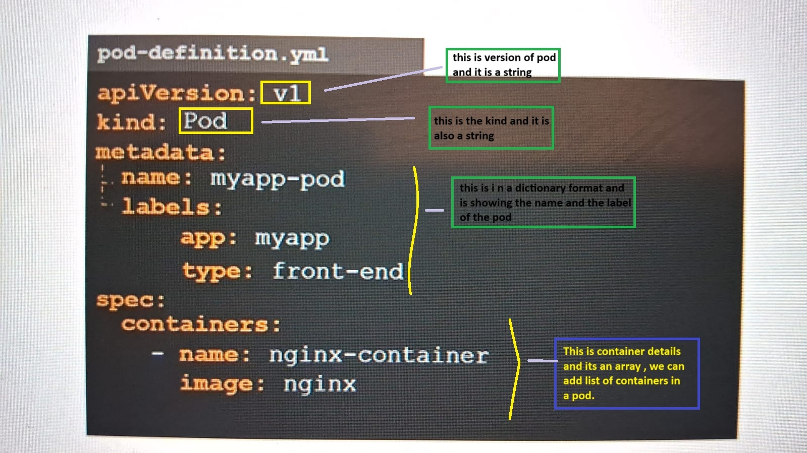
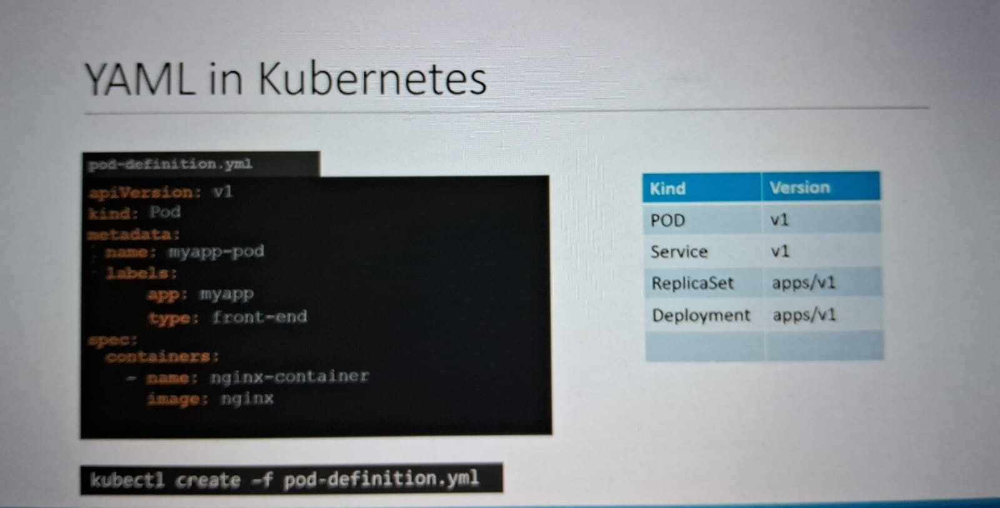
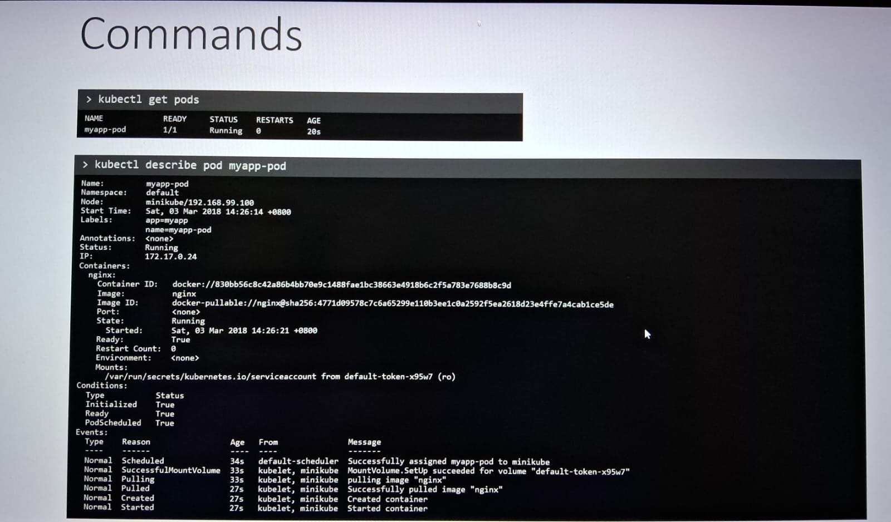

It is smallest component with in the k8 and is used to encapsulate container to run with in pod because , Kubernetes cannot communicate and manages the containers directly.
There might be a single container or multi-container different type with a pod.
Mostly the other containers are help containers.
Helper container are of different type visit - Weblinkfor more details.
Helper container works as support to the main containers, For example, log or data change watchers, monitoring adapters, and so on. A log watcher, for example, can be built once by a different team and reused across different applications.
Kubectl is used to deploy a pod , what it does it creates a pod and then deply an image on application like nginx as a container.
How to create a pod and pod definition file in YAML.
  